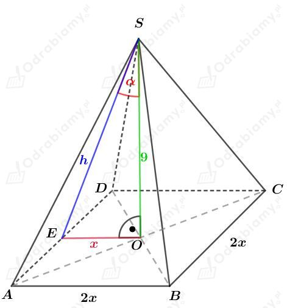
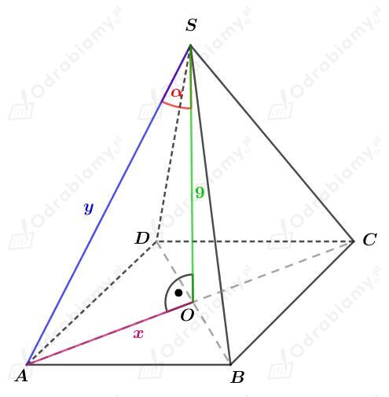
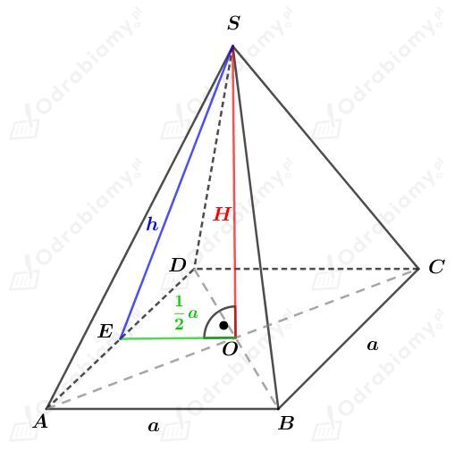

| Objętość ostrosłupa Objętość dowolnego ostrosłupa wyraża się za pomocą wzoru: gdzie Pp jest polem powierzchni podstawy, a H - długością wysokości tego ostrosłupa. |
Dany jest graniastosłup ABCDEFGH prawidłowy czworokątny. Stąd długości odcinków BC i CD są równe.
Przekątna DB ma długość 8 cm. Niech a będzie długością krawędzi podstawy. Korzystając ze wzoru na długość przekątnej kwadratu mamy:
Jednym z wielościanów jest ostrosłup o podstawie BCD i wierzchołku M. Odcinek CM to wysokość tego ostrosłupa.
Obliczmy pole powierzchni podstawy ostrosłupa BCDM, czyli pole trójkąta prostokątnego równoramiennego o przyprostokątnych długości a. Mamy:
Wiemy, że wysokość graniastosłupa (czyli odcinek CG) ma długość 6 cm.
Odcinek CM jest 2 razy dłuższy od odcinka GM. Oznaczmy długość odcinka GM jako x, a długość odcinka CM jako 2x. Mamy wtedy:
czyli
Wyznaczmy objętość ostrosłupa BCDM. Mamy:
Obliczmy objętość graniastosłupa. Mamy:
Jeśli od objętości graniastosłupa odejmiemy objętość ostrosłupa BCDM, to otrzymamy objętość drugiego wielościanu. Mamy więc:
| Objętość ostrosłupa Objętość dowolnego ostrosłupa wyraża się za pomocą wzoru: gdzie Pp jest polem powierzchni podstawy, a H - długością wysokości tego ostrosłupa. |
Dany jest ostrosłup prawidłowy czworokątny o wysokości długości 9.
a)
Rysunek:

Dany jest kąt między wysokością tego ostrosłupa, a wysokością jego ściany bocznej, o którym wiemy, że
Korzystając z definicji funkcji cosinus w trójkącie prostokątnym mamy:
Korzystając z twierdzenia Pitagorasa dla trójkąta EOS mamy:
Odcinek x stanowi połowę długości krawędzi podstawy, stąd obliczamy długość krawędzi podstawy. Mamy:
Obliczmy pole powierzchni podstawy tego ostrosłupa. Mamy:
Obliczmy objętość tego ostrosłupa. Mamy:
b)
Rysunek:

Wiemy, że:
Korzystając z definicji funkcji cosinus w trójkącie prostokątnym mamy:
Korzystając z twierdzenia Pitagorasa dla trójkąta AOS mamy:
Połowa przekątnej podstawy ma więc długość 12. Przekątna podstawy (kwadratu) ma więc długość 24.
Kwadrat jest rombem, więc korzystając ze wzoru na pole rombu mamy:
Obliczmy objętość tego ostrosłupa. Mamy:
| Objętość ostrosłupa Objętość dowolnego ostrosłupa wyraża się za pomocą wzoru: gdzie Pp jest polem powierzchni podstawy, a H - długością wysokości tego ostrosłupa. |
Rysunek:

Wiemy, że pole powierzchni podstawy tego ostrosłupa wynosi P, stąd mamy
Wyznaczmy pole powierzchni całkowitej tego ostrosłupa. Mamy:
Korzystając z twierdzenia Pitagorasa dla trójkąta EOS mamy:
Wyznaczmy objętość tego ostrosłupa. Mamy: